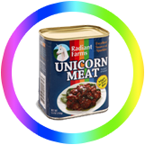

What is Unicorns & Rainbows
Unicorns & Rainbows is a full day conference in the trenches of startup life. A fun get-together where startup founders explain how to design, build, hack and hustle yourself to a killer startup. If you’re determined to turn your donkey idea into a Technicolor Unicorn, we’re expecting you.
How it works
Unicorns and Rainbows is not yet another touchy feely inspirational conference. You show up and are taught strategies for growing your company from the very best.
Topics covered: growth marketing, UX/UI design, user on boarding, community building, growth hacks & how to make the best out of 50 cent noodles. You can actually use what you learn.
We gathered people of fast growing startups to give 30 minute keynotes and actionable tactics for launching and growing your startup.
Should I come?
- If you actually wanna learn something at a conference, you should come. We don’t stop at an inspiration level!
- If you are a startup founder, big company employee, freelancers, advertising man or corporate intrapreneur, you should come.
- If you like food and Belgian beers, you should definitely come.
Tickets to the rainbow are limited so get yours fast!
Speakers
More to be added soon!
Samuel Hulick
Useronboard.com
Samuel Hulick runs UserOnboard.com and is the author of The Elements of User Onboarding. He’s combined UX savvy and a cat-like curiosity for measuring UX impact to become an expert in onboarding. His approach is shaped by over a decade of web experience, theories taken from behavioral psychology, video game design, and even filmmaking.
John Collins
Intercom
Intercom is used by more than 4,000 web and mobile businesses to see and talk to their customers. John is responsible for the award winning Inside Intercom blog. Inside Intercom generates over 100,000 page views every month with a mix of articles on product management, customer support, design and startups - generating significant new business for Intercom.
Quentin Nickmans
eFounders
Quentin Nickmans is eFounders business partner and co-founder. eFounders is a startup Studio. Together with entrepreneurs, they turn unique ideas into successful SAAS companies. As a former top tier consultant and entrepreneur who took a bankrupt company back to the road of success, Quentin knows how to lead teams and shape young startups into real companies.
Wouter Smet
Engagor.com
Wouter Smet is growth hacker at Engagor.com, a social media management platform that enables teams in medium to large enterprises around the world to engage with all their customers on multiple channels. Since being founded in Ghent 4 years ago, Engagor has received $2.6M in funding, opened offices in San Francisco and Istanbul, grew to 30+ team members and serves hundreds of enterprise customers worldwide.
Gilles Bertaux
mention.net
Gilles is Growth Manager at @Mention. Mention is Google Alerts on steroids: it is a set of apps that monitors, in real time, anything on the web and social networks and provides organized, prioritized results. Mention is currently used by 250.000 customers worldwide.

Tba